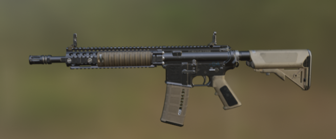

Projects
I first learned Scratch in 2020 by watching many YouTube tutorials and reading books.
Throughout my journey as a developper, I have made multiple different projects of many types such as:

In 2021, I built my own PC and had time to discover Unity. I still use Unity today,
as it is one of my favorite game engines to work with.
Just like Scratch, I taught myself using YouTube tutorials. I starting making small horror games
that my friends and family could play on my computer.

Later on, I started learning Python. I taught myself using the France IOI website.
Using YouTube tutorials, I also learned how to make small 2D games in Pygame.
In 2023, I discovered a bit of Blender because I wanted to be able to create my own custom animations
for my Unity games. I didn't spend much time (only 20 hours or so) trying out this software.

Towards the end of October 2023, I started building more interest in Unreal Engine to be able to create better quality
3D games. Using Blueprints, I tried making a few 3D third person or first person games.

Finally, in December 2023 and early 2024, I have been learning HTML and CSS. I created simple websites at first.